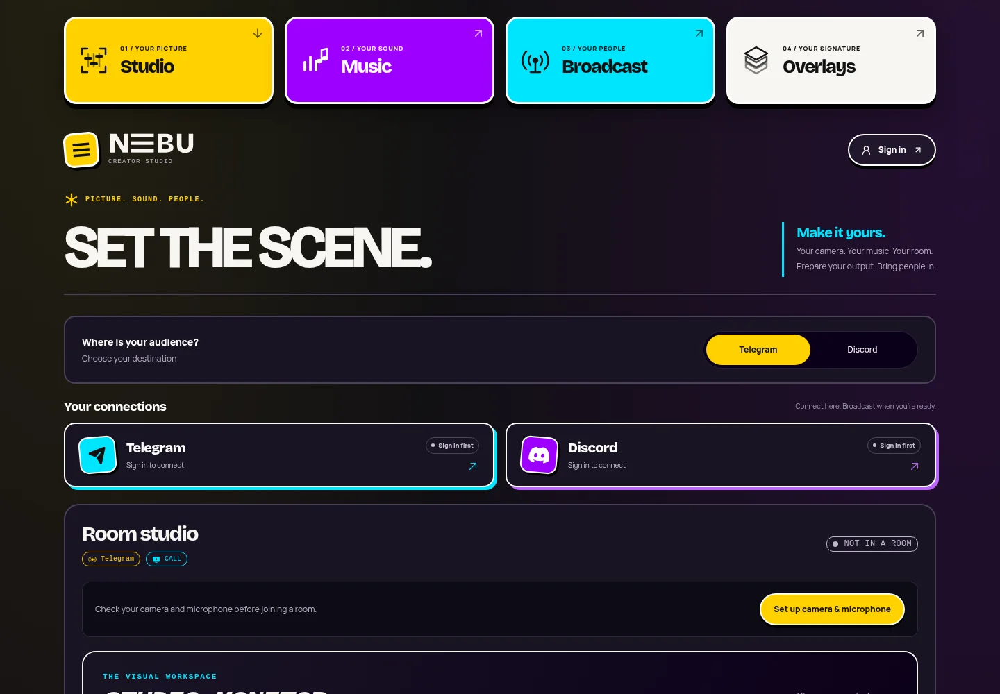

FOR THE CONVERSATIONSA room with
A room with
your people.
Get a small group together. Share an invitation and give the conversation a place to happen.
01 / MEET YOUR STUDIO
Bring your picture, sound and people together. Check your scene before you share it.
PICTURE / FIND YOUR FRAME
Choose your camera, share your screen, or line up a video. Preview your scene before it reaches the room.
02 / YOUR KIND OF LIVE
A conversation worth having.
A video worth sharing.
A moment worth keeping.
Get a small group together. Share an invitation and give the conversation a place to happen.
Walk through your work, line up a video, and show the room what you have in mind.
Record the output you choose and save a copy on your device. Something to come back to.
03 / FROM IDEA TO SCENE
Open the studio. Choose your camera, microphone and sources.
Find the frame. Balance the sound. Check what you’re about to share.
Open your room, invite your people, or record a take for later.

04 / GOOD TO KNOW
NEBU is a browser studio for camera, screen, prepared video, sound and rooms. It brings preparation, preview, sharing and local recording into one place.
The core studio runs in your browser. Use a current browser and allow camera or microphone access when you need it. Optional workflows such as OBS use their own software.
The studio currently opens at vc.friskydev.com, with FriskyDev sign-in. This is NEBU’s app; nebu.quest is its home on the web.
Yes. The studio provides a local preview. Starting a preview and sharing into a room are separate actions, so you can prepare your sources first.
You can open a room and share an invitation with a small group. You can also record your selected output and download it to your device. Recording format depends on your browser. Let everyone know before recording a shared session.
Microphone and loaded video audio have their own controls. Spotify playback stays on your selected Spotify device; controlling Spotify does not automatically add its audio to a broadcast. Connected services depend on your account and available configuration.
ON AIR / OBS BROWSER SOURCE
This configures OBS to pull the studio feed. The studio requires FriskyDev sign-in before that feed is live.
Paste the URL into the Browser source URL field, then match the checklist.
URL: https://vc.friskydev.com/studio?obs=1&layout=clean Width: 1920 Height: 1080 FPS: 30 Shutdown source when not visible: CHECKED Refresh browser when scene becomes active: UNCHECKED
On air / Boom
Boom is a macOS virtual-camera app — an OBS alternative with dynamic layouts, overlays, and Stream Deck support. Select the Boom virtual camera as your camera source in the NEBU studio, then use Boom layouts and overlays for a produced feed. Requires macOS 13 or later.
Install Boom and enable its virtual camera.
In the NEBU studio camera picker, choose the Boom camera.
Frame with Boom layouts, then go live.
If the browser was open while Boom installed, quit and reopen it so the Boom camera appears in the picker.
Boom is a separate paid macOS app, not included with NEBU.
On air / Continuity Camera
Apple Continuity Camera turns a nearby iPhone into your Mac camera and microphone — wireless or over USB. Pick it in the NEBU studio picker like any other camera.
Keep your iPhone nearby, signed into the same Apple Account, with Wi-Fi and Bluetooth on — or plug it in with USB.
In the NEBU studio camera picker, choose your iPhone.
Mount it above your display, frame the shot, and go live.
If the iPhone does not appear: lock and unlock it, toggle Wi-Fi and Bluetooth, then quit and reopen the browser.
Apple Continuity Camera needs macOS Ventura and iOS 16 on the same Apple Account. NEBU sees it as a camera.